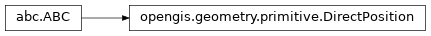

Warning
This specification is not final and is subject to change.
Geometry (ISO 19107)
Primitives

-
class
opengis.geometry.primitive.DirectPosition Holds the coordinates for a position within some coordinate reference system.
-
abstract property
coordinate_reference_system The coordinate reference system in which the coordinate tuple is given.
-
abstract property
dimension The length of coordinate sequence (the number of entries).
-
abstract property